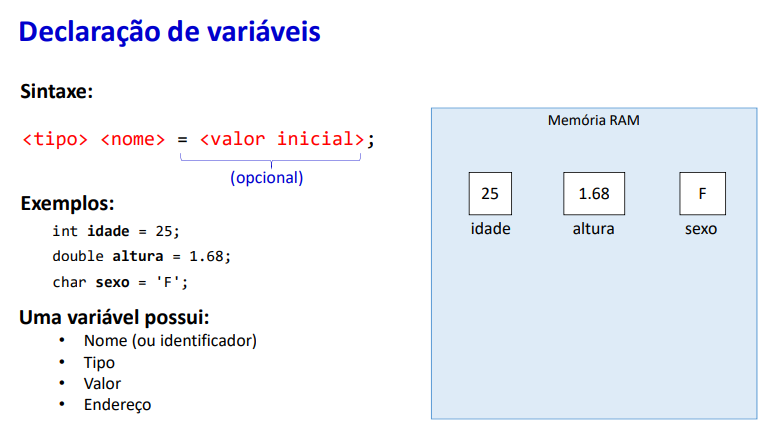
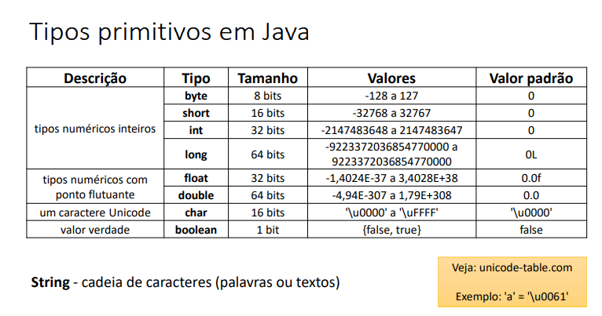
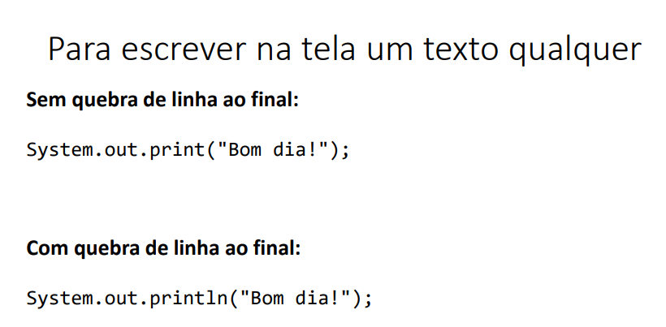

Tipos de Variáveis

Acima conseguimos ter uma visão clara de como se deve declarar uma variável em nossos sistemas
Acima encontramos todos os tipos de Variáveis da linguagem JAVA.
Aqui encontramos o printf e o println. printf não pula linha automático e tem sua maneira de contenação
diferente do println, esse concatena com + e adiciona quebra de linha automático.